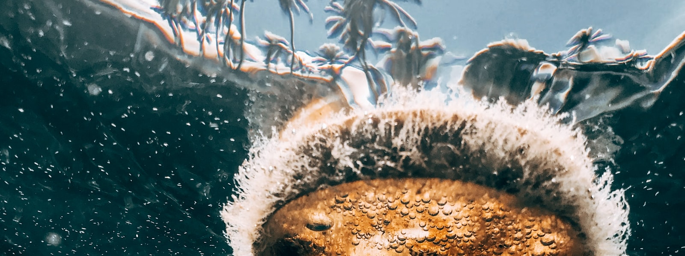

Welcome! You are on water pollution page. Thank you for visiting.
Simple Ways To Help Reduce Water Pollution

Pick up litter and throw it away in a garbage can.
Blow or sweep fertilizer back onto the grass if it gets onto paved areas. Don't put fertilizer on the grass right before it rains. The chemicals will wash into storm drains and waterways.
Mulch or compost grass or yard waste. Or, leave it in your yard if you can't compost. Don't blow leaves into the street. This clogs and damages storm drains.
Wash your car or outdoor equipment where it can flow to a gravel or grassy area instead of a street
Don't pour your motor oil down the storm drain. Take it to the nearest auto parts store. It's free!
Never clean up a spill by hosing it into a storm drain. Place kitty litter, sand, or another absorbent on the spill. Once the liquid becomes solid - sweep it up and throw it in a garbage can.
DO NOT pour fat from cooking or any other type of fat, oil, or grease down the sink. Keep a “fat jar” under the sink to collect the fat and discard in the solid waste when full.
DO NOT dispose of household chemicals or cleaning agents down the sink or toilet.
DO NOT flush pills, liquid or powder medications or drugs down the toilet.
Avoid using the toilet as a wastebasket. Most tissues, wrappers, dust cloths, and other paper goods should be properly discarded in a wastebasket. The fiber reinforced cleaning products that have become popular should never be discarded in the toilet.
Avoid using a garbage disposal. Keep solid wastes solid. Make a compost pile from vegetable scraps.
Install a water efficient toilet. In the meantime, put a brick or 1/2 gal container in the standard toilet tank to reduce water use per flush.
Run the dishwasher or clothes washer only when you have a full load. This conserves electricity and water.
Use the minimum amount of detergent and/or bleach when you are washing clothes or dishes. Use only phosphate free soaps and detergents.
Minimize the use of pesticides, herbicides, fertilizers. DO NOT dispose of these chemicals, motor oil, or other automotive fluids into the sanitary sewer or storm sewer systems. Both of them end at the river.